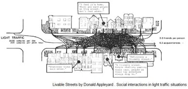

Con la llegada del COVID-19 nos vemos obligados a replantear casi todas las dinámicas que componen nuestro día a día. Nos encontramos confinados dentro de nuestras viviendas y hemos perdido, en parte, libertades que dimos por establecidas. Por excelente que sea, el espacio público de nuestras ciudades pasó a ser un lugar de transito caracterizándose por lo que Marc Augé llama no-lugar. El espacio público tal como lo conocemos, paso a ser un lugar de transición entre nuestros hogares y la farmacia o el supermercado.
A medida que la pandemia del coronavirus detiene la vida urbana, es necesario replantear como desarrollamos las diferentes actividades sociales. Las plazas, las calles bien diseñadas y los parques ya no son una opción para encontrarnos con los otros. Es entonces, cuando los elementos que tenemos ‘a mano’ pasan a ser objetos de improvisación para la generación de nuevos espacios de vida urbana.
Los balcones pasaron a ser escenarios donde se interpretan diferentes actividades sociales. El espacio de relacionarnos con los otros paso a estar determinado por la posibilidad de estar en el exterior de nuestras viviendas y ver a otras personas sin la necesidad de salir a la calle.
Al no poder salir a la calle más que para ir a la farmacia o al supermercado la vida social en el espacio público cambia. Los balcones de Barcelona (ciudad donde estoy de momento) parecen ser los espacios donde los vecinos se relacionan entre sí, hablan, cantan, aplauden, se saludan y escuchan música. A su vez, el vecino ya no es quien se encuentra sobre, debajo o al costado de nuestro apartamento, sino más bien, las personas que se encuentran en la acera del frente.
Las distancias entre las fachadas y los elementos que la componen pasan a ser claves para determinar la calidad del espacio público que se genera. Entonces, la sección de la calle se torna crucial para poder desarrollar diferentes actividades con nuestros vecinos. La calle típica del Eixample de Barcelona tiene las fachadas enfrentadas por una distancia aproximada de 20 metros. Mientras que las calles más tradicionales de la trama de la Barcelona antigua tienen las fachadas separadas por entre 6 y 3 metros de distancia.
Gehl, en ‘ Ciudades para la Gente’ (2014) nos menciona que a partir de los 35 metros es posible establecer una comunicación unidireccional (un concierto). Es entre los 25 y 20 metros cuando podemos llegar a transmitir mensajes cortos, mientras que a partir de los 7 metros es posible mantener una verdadera comunicación llegando hasta unos 50 cm para una conversación más fluida, íntima y con más detalles..
A continuación, se presentan tres casos donde la distancia entre las fachadas es determinante para un espacio público donde puedan ocurrir cosas.
Espacio público en Carrer de Conde Borrel – Sant Antoni – Barcelona. Sección de la calle.
El Carrer de Borrel, posee una distancia de 20 metros entre las fachadas. La composición de la calle cambió con el desarrollo de la Superilla de Sant Antoni. De tener 2 carriles para el tránsito y 2 carriles para aparcar, la calle pasó a destinarle solo uno y se generó nuevo espacio público. Un espacio público que de momento no se puede utilizar por las medidas del confinamiento. La reducción en la densidad de automóviles circulando por la calle redujo la contaminación sonora posibilitando que los vecinos se relacionen mínimamente desde sus balcones. La distancia, menos de 20 metros, les permite a las personas interactuar entre sí.
De todos modos, con la reducción de carriles en la calle se redujo la densidad de automóviles circulando por la misma. De esta forma se redujo la contaminación por gases y contaminación sonora.
Esta última indispensable para poder desarrollar un mínimo de actividades entre los vecinos quienes son capaces de comunicarse mínimamente sustituyendo el espacio público que tienen debajo y manteniendo un mínimo de interacción social.
El espacio resultante entre las fachadas de El Born cuenta una historia diferente. El Carrer dels Banys Vells tiene una sección de 3 metros permitiendo otro tipo de actividad. La plática en los balcones de El Born se puede dar con un nivel más íntimo. Existe la posibilidad de generar un vínculo tanto con la persona que se encuentra a un mismo nivel como con las personas en niveles superiores. La distancia se acorta y la posibilidad de generar conexiones con los vecinos se agranda.
Pese a que las posibilidades de generar actividades con los vecinos en El Born son más amplias respecto a Sant Antoni. La estrecha sección de la calle impide una buena iluminación en los niveles inferiores. La falta de luz en estos niveles impacta negativamente en la habitabilidad de estas unidades.
Espacio público en Carrer dels Banys Vells – El Born – Barcelona. Sección de la calle.
Espacio público en Carrer de Corsega – Sagrada Familia – Barcelona. Sección de la calle
El último caso por desarrollar se encuentra en la fachada posterior de la Antigua Fábrica de Estrella Damm y es actualmente donde vivo. Pese a que la sección de la calle permite un buen asoleamiento de los apartamentos, no existe una conexión humana entre los balcones.
A diferencia de la calle tranquila de Sant Antoni, Corsega aún posee 4 carriles para automóviles por lo que la densidad de estos es considerable. El hecho de tener un muro ciego frente a los apartamentos incluso incide en la habitabilidad de estos. El pasaje de autos genera desde el punto de vista acústico un efecto tubo que se refleja y amplifica por el muro ciego impidiendo la comunicación dentro del apartamento.
A diferencia de los dos casos anteriores, no hay personas que vivan en la acera del frente lo que imposibilita cualquier tipo de conexión humana. Este mismo efecto sucede en el vínculo entre las fachadas que se encuentran frente a parques. Si bien la habitabilidad de los apartamentos que se ubican frente a los parques es mayor. Específicamente en la situación de confinamiento no existe un vínculo con otras personas fuera de cada vivienda.
Es interesante vincular los estudios de Donald Appleyard en ‘Livable Streets’ (1981) donde estudia la relación entre el transito automovilístico y las relaciones que se pueden dar en una calle. En este periodo de confinamiento el esquema cambia pasando a estudiar las relaciones que existen en el espacio público desde la sección horizontal a la vertical.
Libro Livable Streets (1981) Donald Appleyard
Imagen de conexiones entre los diferentes niveles de apartamentos.
-fin-
La ciudad es un organismo en constante cambio, a lo largo de la historia varios fueron los periodos en donde la ciudad tuvo que hacerles frente a pandemias que cambiaron la forma de ver la ciudad y como nos relacionamos con ella.
Como una segunda entrada en arar.uy me interesó vincular la relación entre los balcones de nuestra vivienda y la forma que tenemos para relacionarnos en este período de confinamiento. Invito a replantear como utilizamos el espacio público y como nos relacionamos en este duro periodo de confinamiento.
Gracias por la lectura.
Made By ARAR.